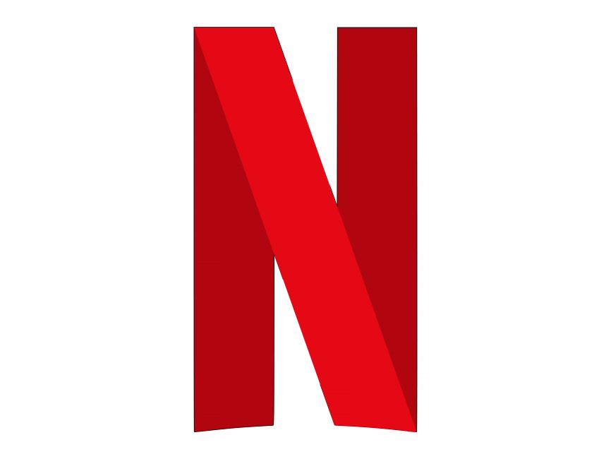

Netflix
Love is Blind: Season 2
This is one of my favorite shows right now because I love reality TV and I think it's entertaining. The way the people interact after meeting face-to-face for the first time makes me cringe, but I can't look away! Their journeys from the pods to their weddings just weeks later keeps me interested in who will end up together and who will leave at the altar. I definitely recommend!